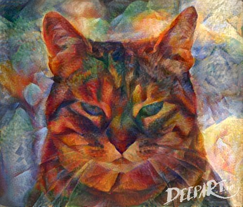

NeuralArt
1.0
NeuralArt
Web references
JcJohnson implementation
anderbsll implementation
CNNMRF
Style-Swap
Cuda
Deepdream
Images Analogies
Deflickr
Color Quantization
Super-Resolution
Animation
OpticalFlow
DepthEstimation
Semantic Segmentation
RoyalRender
NeuralArt
Docs
»
Welcome to NeuralArt’s documentation!
View page source
Welcome to NeuralArt’s documentation!
¶
Contents:

NeuralArt
¶
Web references
original paper
normalised network
links
OpenSource implementations
blog
misc
JcJohnson implementation
web link
install
anderbsll implementation
web link
install python stuffs
install CUDArray
install deeppy
install neural_artistic_style
download neural network
CNNMRF
Web reference
Style-Swap
web link
install
Cuda
uninstall cuda
install cuda
install cudnn
set your GPU in persistence mode
Deepdream
misc papers
inceptionism
Images Analogies
Web references
Deflickr
Linux compile:
Color Quantization
Web ref :
Anthony Dekker’s neuquant algorithm
ImageMagick
Modified Median Color Quantization (MMCQ)
Super-Resolution
Web references
Animation
web link
Paper
OpticalFlow
DeepMatching
EpicFlow
DeepFlow
Structured Edge Detection Toolbox
Intrinsic videos
Semantic optical flow
DepthEstimation
install dnl-depthnormal
Semantic Segmentation
RoyalRender
Web Reference
Submitter
Render config
add environment file
Indices and tables
¶
Index
Module Index
Search Page
{kind=link}